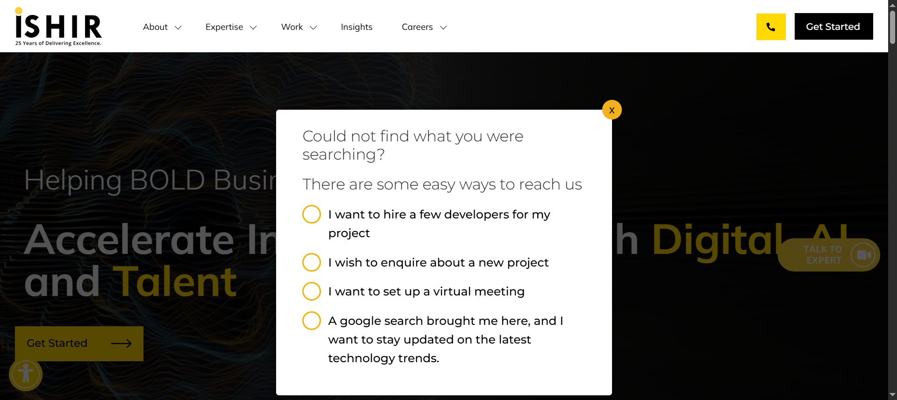

Started
Oct 23, 2025 01:31:30 PM
Ended
Oct 23, 2025 02:42:22 PM
Features Passed
3
Features Failed
20
Features
Scenarios
Steps
Timeline
Tags
| Name | Passed | Failed | Skipped | Others | Passed % |
|---|---|---|---|---|---|
| @InnovationAccelerator | 0 | 4 | 0 | 0 | 0% |
| @DataAnalytics | 0 | 3 | 0 | 0 | 0% |
| @HomePage | 3 | 0 | 0 | 0 | 100% |
| @NewsPage | 1 | 1 | 0 | 0 | 50% |
| @SuccessStories | 2 | 0 | 0 | 0 | 100% |
| @AdvisoryServices | 0 | 4 | 0 | 0 | 0% |
| @GlobalCapabilityCentre | 0 | 2 | 0 | 0 | 0% |
| @ClientsPage | 2 | 1 | 0 | 0 | 66.667% |
| @SoftwareProductDev | 0 | 3 | 0 | 0 | 0% |
| @InsightPage | 2 | 0 | 0 | 0 | 100% |
| @AgileTeamPods | 0 | 3 | 0 | 0 | 0% |
| @EventsPage | 3 | 1 | 0 | 0 | 75% |
| @TeamsPage | 1 | 1 | 0 | 0 | 50% |
| @Accelerator | 0 | 3 | 0 | 0 | 0% |
| @DataAIAccelerator | 0 | 3 | 0 | 0 | 0% |
| @OnDemandTalent | 0 | 2 | 0 | 0 | 0% |
| @AboutPage | 1 | 2 | 0 | 0 | 33.333% |
| @TalentAndSkillsPage | 0 | 3 | 0 | 0 | 0% |
| @ProjectRescue | 0 | 4 | 0 | 0 | 0% |
| @EnterpriseAI | 0 | 3 | 0 | 0 | 0% |
| @MaintenanceSupport | 0 | 2 | 0 | 0 | 0% |
| @CustomSoftDevPage | 0 | 4 | 0 | 0 | 0% |
| @SoftwareDevSupport | 1 | 2 | 0 | 0 | 33.333% |
System/Environment
| Name | Value |
|---|---|
| AppName | Ishir.com |
| user | admin |
| build | v1.01 |
-
About Page Navigation
1:31:32 PM / 00:03:30:773 Fail
About Page Navigation
10.23.2025 1:31:32 PM 10.23.2025 1:35:03 PM 00:03:30:773 · #test-id=1As a user, I want to navigate through the About page to access information and forms.FailNavigate to Our Story pageGiven the user is on the Home pageWhen the user opens the About dropdownAnd selects the Our Story optionThen the Our Story page should appearcom.ishir.hooksmanager.ApplicationHooks.tearDown(io.cucumber.java.Scenario)Navigate_to_Our_Story_pagePassNavigate to Get in Touch from Banner under Our Story pageGiven the user is on the Our Story pageWhen the user clicks the Get Started button under bannerThen the Get in Touch form should appearFailNavigate to Get in Touch from How We Engage under Our Story pageGiven the user is on the Our Story pageWhen the user clicks the Get Started button under How We EngageThen the Get in Touch form should appearcom.ishir.hooksmanager.ApplicationHooks.tearDown(io.cucumber.java.Scenario)Navigate_to_Get_in_Touch_from_How_We_Engage_under_Our_Story_page -
Accelerator Page Navigation
1:35:03 PM / 00:02:55:470 Fail
Accelerator Page Navigation
10.23.2025 1:35:03 PM 10.23.2025 1:37:58 PM 00:02:55:470 · #test-id=30As a user, I want to navigate through the Accelerator Page to access different forms.FailNavigate to Accelerator MenuGiven the user is on the Home pageWhen the user clicks the Services MenuAnd user clicks Accelerator MenuThen Accelerator page should appearStep skippedcom.ishir.hooksmanager.ApplicationHooks.tearDown(io.cucumber.java.Scenario)Navigate_to_Accelerator_MenuFailNavigate to Get in Touch via main banner of Accelerator pageGiven the user is on the Accelerator pageWhen the user clicks Get Started button on main banner of Accelerator PageThen the Get in Touch form should appearStep skippedcom.ishir.hooksmanager.ApplicationHooks.tearDown(io.cucumber.java.Scenario)Navigate_to_Get_in_Touch_via_main_banner_of_Accelerator_page FailNavigate to Get in Touch via Accelerate Your Success sectionGiven the user is on the Accelerator pageWhen the user clicks Get Started on Accelerate Your Success sectionThen the Get in Touch form should appearStep skippedcom.ishir.hooksmanager.ApplicationHooks.tearDown(io.cucumber.java.Scenario)Navigate_to_Get_in_Touch_via_Accelerate_Your_Success_section
FailNavigate to Get in Touch via Accelerate Your Success sectionGiven the user is on the Accelerator pageWhen the user clicks Get Started on Accelerate Your Success sectionThen the Get in Touch form should appearStep skippedcom.ishir.hooksmanager.ApplicationHooks.tearDown(io.cucumber.java.Scenario)Navigate_to_Get_in_Touch_via_Accelerate_Your_Success_section -
Advisory Services Page Navigation
1:37:58 PM / 00:06:32:991 Fail
Advisory Services Page Navigation
10.23.2025 1:37:58 PM 10.23.2025 1:44:31 PM 00:06:32:991 · #test-id=59As a user, I want to navigate through the Advisory Services Page to access different forms.FailNavigate to Advisory Services MenuGiven the user is on the Home pageWhen the user clicks the Services MenuAnd clicks advisory Services Menu optionThen Advisory Services Menu should appearcom.ishir.hooksmanager.ApplicationHooks.tearDown(io.cucumber.java.Scenario)Navigate_to_Advisory_Services_MenuFailNavigate to Get in Touch via Start Your JourneyGiven the user is on the Advisory Services pageWhen the user clicks Start Your Journey buttonThen the Get in Touch form should appearcom.ishir.hooksmanager.ApplicationHooks.tearDown(io.cucumber.java.Scenario)Navigate_to_Get_in_Touch_via_Start_Your_JourneyFailNavigate to Get in Touch via Schedule a ConsultationGiven the user is on the Advisory Services pageWhen user clicks Schedule a Consultation button on AdvisoryPageThen the Get in Touch form should appearcom.ishir.hooksmanager.ApplicationHooks.tearDown(io.cucumber.java.Scenario)Navigate_to_Get_in_Touch_via_Schedule_a_ConsultationFailNavigate to Get in Touch via Reach out to usGiven the user is on the Advisory Services pageWhen user clicks Learn More button over Reach out to us sectionThen the Get in Touch form should appearcom.ishir.hooksmanager.ApplicationHooks.tearDown(io.cucumber.java.Scenario)Navigate_to_Get_in_Touch_via_Reach_out_to_us -
Agile Team pods Navigation
1:44:31 PM / 00:03:01:992 Fail
Agile Team pods Navigation
10.23.2025 1:44:31 PM 10.23.2025 1:47:33 PM 00:03:01:992 · #test-id=97As a user, I want to navigate through the Agile Team Pods age to access different forms.FailNavigate to on Demand PageGiven the user is on the Home pageWhen the user clicks the Services MenuAnd hovers Talent & Skills Menu optionAnd click Agile Team Pods MenuStep skippedThen On Agile Team Pods page should appearStep skippedcom.ishir.hooksmanager.ApplicationHooks.tearDown(io.cucumber.java.Scenario)Navigate_to_on_Demand_PageFailNavigate to Get in Touch via Agile Team Pods page main bannerGiven the user is on the Agile Team Pods pageWhen the user clicks Get Started button on Agile Pods main bannerThen the Get in Touch form should appearStep skippedcom.ishir.hooksmanager.ApplicationHooks.tearDown(io.cucumber.java.Scenario)Navigate_to_Get_in_Touch_via_Agile_Team_Pods_page_main_bannerFailNavigate to Get in Touch via Agile Team Pods page How we engage sectionGiven the user is on the Agile Team Pods pageWhen user clicks Get Started under How we engage sectionThen the Get in Touch form should appearStep skippedcom.ishir.hooksmanager.ApplicationHooks.tearDown(io.cucumber.java.Scenario)Navigate_to_Get_in_Touch_via_Agile_Team_Pods_page_How_we_engage_section -
Clients Page Navigation
1:47:33 PM / 00:03:43:483 Fail
Clients Page Navigation
10.23.2025 1:47:33 PM 10.23.2025 1:51:17 PM 00:03:43:483 · #test-id=127As a user, I want to navigate through the Clients page to access information and formsPassNavigate to Clients pageGiven the user is on the Home pageWhen the user opens the Work dropdownAnd selects the Clients optionThen Clients page should appearPassNavigate to Get in Touch from Clients page using clients sectionGiven the user is on the clients pageWhen the user clicks start your innovation journey buttonThen the Get in Touch form should appearFailNavigate to Get in Touch from Clients page using Let's talk linkGiven the user is on the clients pageWhen the user clicks Let's talk linkThen the Get in Touch form should appearcom.ishir.hooksmanager.ApplicationHooks.tearDown(io.cucumber.java.Scenario)Navigate_to_Get_in_Touch_from_Clients_page_using_Let's_talk_link -
Custom Software Dev Page Navigation
1:51:17 PM / 00:04:04:400 Fail
Custom Software Dev Page Navigation
10.23.2025 1:51:17 PM 10.23.2025 1:55:21 PM 00:04:04:400 · #test-id=156As a user, I want to navigate through the Custom Software Dev Page to access different forms.FailNavigate to Custom Software Dev MenuGiven the user is on the Home pageWhen the user hovers Software dev support MenuAnd click Custom Software DevelopmentStep skippedThen Custom Software Dev page should appearStep skippedcom.ishir.hooksmanager.ApplicationHooks.tearDown(io.cucumber.java.Scenario)Navigate_to_Custom_Software_Dev_MenuFailNavigate to Get in Touch via main banner for custom software dev pageGiven the user is on the custom software dev pageWhen user clicks Get Started on main banner custom software dev pageThen the Get in Touch form should appearStep skippedcom.ishir.hooksmanager.ApplicationHooks.tearDown(io.cucumber.java.Scenario)Navigate_to_Get_in_Touch_via_main_banner_for_custom_software_dev_pageFailNavigate to Get in Touch via product Journey banner for custom software dev pageGiven the user is on the custom software dev pageWhen user clicks Get Started on product Journey sectionThen the Get in Touch form should appearStep skippedcom.ishir.hooksmanager.ApplicationHooks.tearDown(io.cucumber.java.Scenario)Navigate_to_Get_in_Touch_via_product_Journey_banner_for_custom_software_dev_pageFailNavigate to Get in Touch via Find Business problem for custom software dev pageGiven the user is on the custom software dev pageWhen user clicks Get Started on Find Business problem sectionThen the Get in Touch form should appearStep skippedcom.ishir.hooksmanager.ApplicationHooks.tearDown(io.cucumber.java.Scenario)Navigate_to_Get_in_Touch_via_Find_Business_problem_for_custom_software_dev_page
-
Data+AI Accelerator Page Navigation
1:55:21 PM / 00:03:03:514 Fail
Data+AI Accelerator Page Navigation
10.23.2025 1:55:21 PM 10.23.2025 1:58:25 PM 00:03:03:514 · #test-id=194As a user, I want to navigate through the Data+AI Accelerator Page to access different forms.FailNavigate to Data+AI Accelerator MenuGiven the user is on the Home pageWhen the user clicks the Services MenuAnd clicks Data+AI Accelerator MenuThen Data+AI Accelerator page should appearStep skippedcom.ishir.hooksmanager.ApplicationHooks.tearDown(io.cucumber.java.Scenario)Navigate_to_Data+AI_Accelerator_MenuFailNavigate to Get in Touch via main banner of Data+AI Accelerator pageGiven the user is on the Data+AI Accelerator pageWhen the user clicks Get Started button on main banner of Data+AI Accelerator PageThen the Get in Touch form should appearStep skippedcom.ishir.hooksmanager.ApplicationHooks.tearDown(io.cucumber.java.Scenario)Navigate_to_Get_in_Touch_via_main_banner_of_Data+AI_Accelerator_page FailNavigate to Get in Touch via Ready to Accelerate sectionGiven the user is on the Data+AI Accelerator pageWhen the user clicks Get Started within Ready to Accelerate sectionThen the Get in Touch form should appearStep skippedcom.ishir.hooksmanager.ApplicationHooks.tearDown(io.cucumber.java.Scenario)Navigate_to_Get_in_Touch_via_Ready_to_Accelerate_section
FailNavigate to Get in Touch via Ready to Accelerate sectionGiven the user is on the Data+AI Accelerator pageWhen the user clicks Get Started within Ready to Accelerate sectionThen the Get in Touch form should appearStep skippedcom.ishir.hooksmanager.ApplicationHooks.tearDown(io.cucumber.java.Scenario)Navigate_to_Get_in_Touch_via_Ready_to_Accelerate_section
-
Data Analytics Page Navigation
1:58:25 PM / 00:03:02:417 Fail
Data Analytics Page Navigation
10.23.2025 1:58:25 PM 10.23.2025 2:01:27 PM 00:03:02:417 · #test-id=223As a user, I want to navigate through the Data Analytics Page to access different forms.FailNavigate to Data Analytics MenuGiven the user is on the Home pageWhen the user clicks the Services MenuAnd hovers Data+AI MenuAnd clicks Data Analytics MenuStep skippedThen Data Analytics page should appearStep skippedcom.ishir.hooksmanager.ApplicationHooks.tearDown(io.cucumber.java.Scenario)Navigate_to_Data_Analytics_Menu FailNavigate to Get in Touch via main banner of Data Analytics pageGiven the user is on the Data Analytics pageWhen user clicks Get Started button on main banner of Data Analytics PageThen the Get in Touch form should appearStep skippedcom.ishir.hooksmanager.ApplicationHooks.tearDown(io.cucumber.java.Scenario)Navigate_to_Get_in_Touch_via_main_banner_of_Data_Analytics_pageFailNavigate to Get in Touch via How We Engage section of Data Analytics pageGiven the user is on the Data Analytics pageWhen user clicks Get Started on How We Engage section of Data Analytics PageThen the Get in Touch form should appearStep skippedcom.ishir.hooksmanager.ApplicationHooks.tearDown(io.cucumber.java.Scenario)Navigate_to_Get_in_Touch_via_How_We_Engage_section_of_Data_Analytics_page
FailNavigate to Get in Touch via main banner of Data Analytics pageGiven the user is on the Data Analytics pageWhen user clicks Get Started button on main banner of Data Analytics PageThen the Get in Touch form should appearStep skippedcom.ishir.hooksmanager.ApplicationHooks.tearDown(io.cucumber.java.Scenario)Navigate_to_Get_in_Touch_via_main_banner_of_Data_Analytics_pageFailNavigate to Get in Touch via How We Engage section of Data Analytics pageGiven the user is on the Data Analytics pageWhen user clicks Get Started on How We Engage section of Data Analytics PageThen the Get in Touch form should appearStep skippedcom.ishir.hooksmanager.ApplicationHooks.tearDown(io.cucumber.java.Scenario)Navigate_to_Get_in_Touch_via_How_We_Engage_section_of_Data_Analytics_page -
EnterpriseAI Page Navigation
2:01:27 PM / 00:03:01:204 Fail
EnterpriseAI Page Navigation
10.23.2025 2:01:27 PM 10.23.2025 2:04:28 PM 00:03:01:204 · #test-id=253As a user, I want to navigate through the EnterpriseAI Page to access different forms.FailNavigate to EnterpriseAI MenuGiven the user is on the Home pageWhen the user clicks the Services MenuAnd hovers Data+AI MenuAnd click EnterpriseAI MenuStep skippedThen EnterpriseAI page should appearStep skippedcom.ishir.hooksmanager.ApplicationHooks.tearDown(io.cucumber.java.Scenario)Navigate_to_EnterpriseAI_MenuFailNavigate to Get in Touch via main banner of EnterpriseAI pageGiven the user is on the EnterpriseAI pageWhen user clicks Get Started button on main banner of EnterpriseAI PageThen the Get in Touch form should appearStep skippedcom.ishir.hooksmanager.ApplicationHooks.tearDown(io.cucumber.java.Scenario)Navigate_to_Get_in_Touch_via_main_banner_of_EnterpriseAI_page FailNavigate to Get in Touch via how we engage section of EnterpriseAI pageGiven the user is on the EnterpriseAI pageWhen user clicks Get Started on how we engage section of EnterpriseAI PageThen the Get in Touch form should appearStep skippedcom.ishir.hooksmanager.ApplicationHooks.tearDown(io.cucumber.java.Scenario)Navigate_to_Get_in_Touch_via_how_we_engage_section_of_EnterpriseAI_page
FailNavigate to Get in Touch via how we engage section of EnterpriseAI pageGiven the user is on the EnterpriseAI pageWhen user clicks Get Started on how we engage section of EnterpriseAI PageThen the Get in Touch form should appearStep skippedcom.ishir.hooksmanager.ApplicationHooks.tearDown(io.cucumber.java.Scenario)Navigate_to_Get_in_Touch_via_how_we_engage_section_of_EnterpriseAI_page -
Events Page Navigation
2:04:28 PM / 00:03:22:030 Fail
Events Page Navigation
10.23.2025 2:04:28 PM 10.23.2025 2:07:50 PM 00:03:22:030 · #test-id=283As a user, I want to navigate through the Events page to access information and forms.PassNavigate to Events pageGiven the user is on the Home pageWhen the user opens the About dropdownAnd selects the Events optionThen Events page should appearPassNavigate to Get in Touch from Events main pageGiven the user is on the Events pageWhen the user clicks the Stay Updated button on Events PageThen the Get in Touch form should appearPassNavigate to Get in Touch from Events detail pageGiven the user is on the Events pageWhen the user clicks Read More over available eventAnd the user clicks Let's talk imageThen the Get in Touch form should appearFailNavigate to Get in Touch from Trending Blogs pageGiven the user is on the Events pageWhen the user clicks the trending blogAnd click Get Started button under blog pageThen the Get in Touch form should appearStep skippedcom.ishir.hooksmanager.ApplicationHooks.tearDown(io.cucumber.java.Scenario)Navigate_to_Get_in_Touch_from_Trending_Blogs_page -
Global Capability Centre Navigation
2:07:50 PM / 00:02:02:038 Fail
Global Capability Centre Navigation
10.23.2025 2:07:50 PM 10.23.2025 2:09:52 PM 00:02:02:038 · #test-id=323As a user, I want to navigate through the Global Capability Centre to access different forms.FailNavigate to on Global Capability Centre PageGiven the user is on the Home pageWhen the user clicks the Services MenuAnd hovers Talent & Skills Menu optionAnd clicks Global Capability Centre MenuStep skippedThen Global Capability Centre page should appearStep skippedcom.ishir.hooksmanager.ApplicationHooks.tearDown(io.cucumber.java.Scenario)Navigate_to_on_Global_Capability_Centre_Page FailNavigate to Get in Touch via Global Capability Centre pageGiven the user is on the Global Capability Centre pageWhen the user clicks Get Started button on main banner GCCThen the Get in Touch form should appearStep skippedcom.ishir.hooksmanager.ApplicationHooks.tearDown(io.cucumber.java.Scenario)Navigate_to_Get_in_Touch_via_Global_Capability_Centre_page
FailNavigate to Get in Touch via Global Capability Centre pageGiven the user is on the Global Capability Centre pageWhen the user clicks Get Started button on main banner GCCThen the Get in Touch form should appearStep skippedcom.ishir.hooksmanager.ApplicationHooks.tearDown(io.cucumber.java.Scenario)Navigate_to_Get_in_Touch_via_Global_Capability_Centre_page
-
Home Page Navigation
2:09:52 PM / 00:02:17:739 Pass
Home Page Navigation
10.23.2025 2:09:52 PM 10.23.2025 2:12:10 PM 00:02:17:739 · #test-id=344As a user, I want to navigate through the Home page to access different forms.PassNavigate to Get in Touch via headerGiven the user is on the Home pageWhen the user clicks the Get Started button in the headerThen the Get in Touch form should appearPassNavigate to Get in Touch via page contentGiven the user is on the Home pageWhen the user clicks the Get Started button in the page contentThen the Get in Touch form should appearPassNavigate to Get in Touch via Ready to Start sectionGiven the user is on the Home pageWhen the user clicks the Get Started button in the Ready to Start sectionThen the Get in Touch form should appear -
Innovation Accelerator Page Navigation
2:12:10 PM / 00:04:03:531 Fail
Innovation Accelerator Page Navigation
10.23.2025 2:12:10 PM 10.23.2025 2:16:14 PM 00:04:03:531 · #test-id=372As a user, I want to navigate through the Innovation Accelerator Page to access different forms.FailNavigate to Innovation Accelerator MenuGiven the user is on the Home pageWhen the user clicks the Services MenuAnd hovers Accelerator MenuAnd clicks Innovation Accelerator MenuStep skippedThen Innovation Accelerator page should appearStep skippedcom.ishir.hooksmanager.ApplicationHooks.tearDown(io.cucumber.java.Scenario)Navigate_to_Innovation_Accelerator_MenuFailNavigate to Get in Touch via main banner of Innovation Accelerator pageGiven the user is on the Innovation Accelerator pageWhen the user clicks Get Started button on main banner of Innovation Accelerator PageThen the Get in Touch form should appearStep skippedcom.ishir.hooksmanager.ApplicationHooks.tearDown(io.cucumber.java.Scenario)Navigate_to_Get_in_Touch_via_main_banner_of_Innovation_Accelerator_pageFailNavigate to Get in Touch via Start Innovation Journey sectionGiven the user is on the Innovation Accelerator pageWhen the user clicks Start Innovation Journey today within Innovation Journey sectionThen the Get in Touch form should appearStep skippedcom.ishir.hooksmanager.ApplicationHooks.tearDown(io.cucumber.java.Scenario)Navigate_to_Get_in_Touch_via_Start_Innovation_Journey_sectionFailNavigate to Get in Touch via Ready to innovate sectionGiven the user is on the Innovation Accelerator pageWhen the user clicks Get Started within Ready to Innovate sectionThen the Get in Touch form should appearStep skippedcom.ishir.hooksmanager.ApplicationHooks.tearDown(io.cucumber.java.Scenario)Navigate_to_Get_in_Touch_via_Ready_to_innovate_section -
About SuccessStories page Navigation
2:16:14 PM / 00:01:39:819 Pass
About SuccessStories page Navigation
10.23.2025 2:16:14 PM 10.23.2025 2:17:53 PM 00:01:39:819 · #test-id=411As a user, I want to navigate through the Insight page to access information and forms.PassNavigate to Insight pageGiven the user is on the Home pageWhen the user clicks the Insight optionThen Insight page should appearPassNavigate to Get in Touch from Insight pageGiven the user is on the Insight pageWhen the user clicks the Read More linkAnd user clicks Get Started button over Insight detailThen the Get in Touch form should appear -
Maintenance Support Page Navigation
2:17:53 PM / 00:02:02:119 Fail
Maintenance Support Page Navigation
10.23.2025 2:17:53 PM 10.23.2025 2:19:56 PM 00:02:02:119 · #test-id=431As a user, I want to navigate through the Maintenance Support Page to access different forms.FailNavigate to Maintenance Support MenuGiven the user is on the Home pageWhen the user clicks the Services MenuAnd hovers Digital Innovation MenuAnd click Maintenance Support MenuStep skippedThen Maintenance Support page should appearStep skippedcom.ishir.hooksmanager.ApplicationHooks.tearDown(io.cucumber.java.Scenario)Navigate_to_Maintenance_Support_MenuFailNavigate to Get in Touch via Maintenance Support pageGiven the user is on the Maintenance Support pageWhen user clicks Get Started button on main banner of Maintenance Support PageThen the Get in Touch form should appearStep skippedcom.ishir.hooksmanager.ApplicationHooks.tearDown(io.cucumber.java.Scenario)Navigate_to_Get_in_Touch_via_Maintenance_Support_page -
News Page Navigation
2:19:56 PM / 00:01:53:827 Fail
News Page Navigation
10.23.2025 2:19:56 PM 10.23.2025 2:21:49 PM 00:01:53:827 · #test-id=452As a user, I want to navigate through the News page to access information and forms.PassNavigate to News pageGiven the user is on the Home pageWhen the user opens the About dropdownAnd selects the News optionThen News page should appearFailNavigate to Get in Touch from News main pageGiven the user is on the News pageWhen the user clicks the Stay Updated button on News PageThen the Get in Touch form should appearcom.ishir.hooksmanager.ApplicationHooks.tearDown(io.cucumber.java.Scenario)Navigate_to_Get_in_Touch_from_News_main_page
-
On Demand Page Navigation
2:21:49 PM / 00:02:00:707 Fail
On Demand Page Navigation
10.23.2025 2:21:49 PM 10.23.2025 2:23:50 PM 00:02:00:707 · #test-id=472As a user, I want to navigate through the On Demand Page to access different forms.FailNavigate to on Demand PageGiven the user is on the Home pageWhen the user clicks the Services MenuAnd hovers Talent & Skills Menu optionAnd clicks On Demand & Fractional Talent MenuStep skippedThen On Demand page should appearStep skippedcom.ishir.hooksmanager.ApplicationHooks.tearDown(io.cucumber.java.Scenario)Navigate_to_on_Demand_PageFailNavigate to Get in Touch via On Demand Talent pageGiven the user is on the On Demand Talent pageWhen the user clicks Get Started button on demand pageThen the Get in Touch form should appearStep skippedcom.ishir.hooksmanager.ApplicationHooks.tearDown(io.cucumber.java.Scenario)Navigate_to_Get_in_Touch_via_On_Demand_Talent_page
-
Project Rescue Page Navigation
2:23:50 PM / 00:04:01:848 Fail
Project Rescue Page Navigation
10.23.2025 2:23:50 PM 10.23.2025 2:27:52 PM 00:04:01:848 · #test-id=493As a user, I want to navigate through the Project Rescue Page to access different forms.FailNavigate to Project Rescue MenuGiven the user is on the Home pageWhen the user clicks the Services MenuAnd hovers Digital Innovation MenuAnd click Project Rescue MenuStep skippedThen Project Rescue page should appearStep skippedcom.ishir.hooksmanager.ApplicationHooks.tearDown(io.cucumber.java.Scenario)Navigate_to_Project_Rescue_MenuFailNavigate to Get in Touch via Get Started in main bannerGiven the user is on the Project Rescue pageWhen the user clicks Get Started on main bannerThen the Get in Touch form should appearStep skippedcom.ishir.hooksmanager.ApplicationHooks.tearDown(io.cucumber.java.Scenario)Navigate_to_Get_in_Touch_via_Get_Started_in_main_bannerFailNavigate to Get in Touch via Get Started under common issues sectionGiven the user is on the Project Rescue pageWhen the user clicks Get Started on under common issues sectionThen the Get in Touch form should appearStep skippedcom.ishir.hooksmanager.ApplicationHooks.tearDown(io.cucumber.java.Scenario)Navigate_to_Get_in_Touch_via_Get_Started_under_common_issues_sectionFailNavigate to Get in Touch via Get Started under how we engage sectionGiven the user is on the Project Rescue pageWhen the user clicks Get Started on under how we engage sectionThen the Get in Touch form should appearStep skippedcom.ishir.hooksmanager.ApplicationHooks.tearDown(io.cucumber.java.Scenario)Navigate_to_Get_in_Touch_via_Get_Started_under_how_we_engage_section
-
Software Dev Support Page Navigation
2:27:52 PM / 00:04:33:062 Fail
Software Dev Support Page Navigation
10.23.2025 2:27:52 PM 10.23.2025 2:32:25 PM 00:04:33:062 · #test-id=532As a user, I want to navigate through the Software Dev Support Page to access different forms.FailNavigate to Software Dev Support MenuGiven the user is on the Home pageWhen the user clicks the Services MenuAnd click Software Dev Support Menu optionThen Software Dev Support page should appearcom.ishir.hooksmanager.ApplicationHooks.tearDown(io.cucumber.java.Scenario)Navigate_to_Software_Dev_Support_MenuPassNavigate to Get in Touch via Start Your Project TodayGiven the user is on the Software Dev Support pageWhen the user clicks Start Your Project Today buttonThen the Get in Touch form should appearFailNavigate to Get in Touch via Schedule a consultation todayGiven the user is on the Software Dev Support pageWhen the user clicks Schedule a Consultation buttonThen the Get in Touch form should appearcom.ishir.hooksmanager.ApplicationHooks.tearDown(io.cucumber.java.Scenario)Navigate_to_Get_in_Touch_via_Schedule_a_consultation_today -
Software Product Development Page Navigation
2:32:25 PM / 00:03:03:171 Fail
Software Product Development Page Navigation
10.23.2025 2:32:25 PM 10.23.2025 2:35:28 PM 00:03:03:171 · #test-id=561As a user, I want to navigate through the Software Product Development page to access different forms.FailNavigate to Software Product Development MenuGiven the user is on the Home pageWhen the user clicks the Services MenuAnd hovers Digital Innovation MenuAnd clicks Software Product Development MenuStep skippedThen Software Product Development page should appearStep skippedcom.ishir.hooksmanager.ApplicationHooks.tearDown(io.cucumber.java.Scenario)Navigate_to_Software_Product_Development_MenuFailNavigate to Get in Touch via main banner of Software Product Development pageGiven the user is on the Software Product Development pageWhen the user clicks Get Started button on main banner of Software Product Development pageThen the Get in Touch form should appearStep skippedcom.ishir.hooksmanager.ApplicationHooks.tearDown(io.cucumber.java.Scenario)Navigate_to_Get_in_Touch_via_main_banner_of_Software_Product_Development_page FailNavigate to Get in Touch via Start Your Product Journey sectionGiven the user is on the Software Product Development pageWhen the user clicks Get Started within Start Your Product Journey sectionThen the Get in Touch form should appearStep skippedcom.ishir.hooksmanager.ApplicationHooks.tearDown(io.cucumber.java.Scenario)Navigate_to_Get_in_Touch_via_Start_Your_Product_Journey_section
FailNavigate to Get in Touch via Start Your Product Journey sectionGiven the user is on the Software Product Development pageWhen the user clicks Get Started within Start Your Product Journey sectionThen the Get in Touch form should appearStep skippedcom.ishir.hooksmanager.ApplicationHooks.tearDown(io.cucumber.java.Scenario)Navigate_to_Get_in_Touch_via_Start_Your_Product_Journey_section -
About SuccessStories page Navigation
2:35:28 PM / 00:01:42:876 Pass
About SuccessStories page Navigation
10.23.2025 2:35:28 PM 10.23.2025 2:37:11 PM 00:01:42:876 · #test-id=591As a user, I want to navigate through the Success Stories page to access information and forms.PassNavigate to Success Stories pageGiven the user is on the Home pageWhen the user opens the Work dropdownAnd selects the Success Stories optionThen the Success Stories page should appearPassNavigate to Get in Touch from Success Stories pageGiven the user is on the Success Stories pageWhen the user clicks the available view case studyAnd clicks Contact US Today over case studyThen the Get in Touch form should appear -
Talent & Skills Page Navigation
2:37:11 PM / 00:03:02:724 Fail
Talent & Skills Page Navigation
10.23.2025 2:37:11 PM 10.23.2025 2:40:14 PM 00:03:02:724 · #test-id=612As a user, I want to navigate through the Talent & Skills Page to access different forms.FailNavigate to Talent & Skills MenuGiven the user is on the Home pageWhen the user clicks the Services MenuAnd click Talent & Skills Menu optionThen Talent & Skills page should appearStep skippedcom.ishir.hooksmanager.ApplicationHooks.tearDown(io.cucumber.java.Scenario)Navigate_to_Talent_&_Skills_Menu FailNavigate to Get in Touch via main banner on Talent & Skills pageGiven the user is on the Talent & Skills pageWhen the user clicks main Get Started buttonThen the Get in Touch form should appearStep skippedcom.ishir.hooksmanager.ApplicationHooks.tearDown(io.cucumber.java.Scenario)Navigate_to_Get_in_Touch_via_main_banner_on_Talent_&_Skills_pageFailNavigate to Get in Touch via bottom banner on Talent & Skills pageGiven the user is on the Talent & Skills pageWhen the user clicks bottom Get Started buttonThen the Get in Touch form should appearStep skippedcom.ishir.hooksmanager.ApplicationHooks.tearDown(io.cucumber.java.Scenario)Navigate_to_Get_in_Touch_via_bottom_banner_on_Talent_&_Skills_page
FailNavigate to Get in Touch via main banner on Talent & Skills pageGiven the user is on the Talent & Skills pageWhen the user clicks main Get Started buttonThen the Get in Touch form should appearStep skippedcom.ishir.hooksmanager.ApplicationHooks.tearDown(io.cucumber.java.Scenario)Navigate_to_Get_in_Touch_via_main_banner_on_Talent_&_Skills_pageFailNavigate to Get in Touch via bottom banner on Talent & Skills pageGiven the user is on the Talent & Skills pageWhen the user clicks bottom Get Started buttonThen the Get in Touch form should appearStep skippedcom.ishir.hooksmanager.ApplicationHooks.tearDown(io.cucumber.java.Scenario)Navigate_to_Get_in_Touch_via_bottom_banner_on_Talent_&_Skills_page -
Teams Page Navigation
2:40:14 PM / 00:02:08:633 Fail
Teams Page Navigation
10.23.2025 2:40:14 PM 10.23.2025 2:42:22 PM 00:02:08:633 · #test-id=641As a user, I want to navigate through the Teams page to access information and forms.FailNavigate to Teams pageGiven the user is on the Home pageWhen the user opens the About dropdownAnd selects the Team optionThen Team page should appearcom.ishir.hooksmanager.ApplicationHooks.tearDown(io.cucumber.java.Scenario)Navigate_to_Teams_pagePassNavigate to Get in Touch from Our Teams pageGiven the user is on the Our Story pageWhen the user clicks the Get Started button on Teams PageThen the Get in Touch form should appear
-
org.junit.ComparisonFailure
11 tests
org.junit.ComparisonFailure
11 failedStatus Timestamp TestName Fail 13:32:08 PM Then the Our Story page should appear About Page Navigation.Navigate to Our Story page.Then the Our Story page should appearFail 13:34:51 PM Then the Get in Touch form should appear About Page Navigation.Navigate to Get in Touch from How We Engage under Our Story page.Then the Get in Touch form should appearFail 13:39:09 PM Then Advisory Services Menu should appear Advisory Services Page Navigation.Navigate to Advisory Services Menu.Then Advisory Services Menu should appearFail 13:40:55 PM Then the Get in Touch form should appear Advisory Services Page Navigation.Navigate to Get in Touch via Start Your Journey.Then the Get in Touch form should appearFail 13:42:37 PM Then the Get in Touch form should appear Advisory Services Page Navigation.Navigate to Get in Touch via Schedule a Consultation.Then the Get in Touch form should appearFail 13:44:20 PM Then the Get in Touch form should appear Advisory Services Page Navigation.Navigate to Get in Touch via Reach out to us.Then the Get in Touch form should appearFail 13:51:05 PM Then the Get in Touch form should appear Clients Page Navigation.Navigate to Get in Touch from Clients page using Let's talk link.Then the Get in Touch form should appearFail 14:21:38 PM Then the Get in Touch form should appear News Page Navigation.Navigate to Get in Touch from News main page.Then the Get in Touch form should appearFail 14:29:03 PM Then Software Dev Support page should appear Software Dev Support Page Navigation.Navigate to Software Dev Support Menu.Then Software Dev Support page should appearFail 14:32:14 PM Then the Get in Touch form should appear Software Dev Support Page Navigation.Navigate to Get in Touch via Schedule a consultation today.Then the Get in Touch form should appearFail 14:41:03 PM Then Team page should appear Teams Page Navigation.Navigate to Teams page.Then Team page should appear -
org.openqa.selenium.NoSuchElementException
40 tests
org.openqa.selenium.NoSuchElementException
40 failedStatus Timestamp TestName Fail 13:35:52 PM And user clicks Accelerator Menu Accelerator Page Navigation.Navigate to Accelerator Menu.And user clicks Accelerator MenuFail 13:36:11 PM When the user clicks Get Started button on main banner of Accelerator Page Accelerator Page Navigation.Navigate to Get in Touch via main banner of Accelerator page.When the user clicks Get Started button on main banner of Accelerator PageFail 13:37:12 PM When the user clicks Get Started on Accelerate Your Success section Accelerator Page Navigation.Navigate to Get in Touch via Accelerate Your Success section.When the user clicks Get Started on Accelerate Your Success sectionFail 13:45:20 PM And hovers Talent & Skills Menu option Agile Team pods Navigation.Navigate to on Demand Page.And hovers Talent & Skills Menu optionFail 13:45:35 PM When the user clicks Get Started button on Agile Pods main banner Agile Team pods Navigation.Navigate to Get in Touch via Agile Team Pods page main banner.When the user clicks Get Started button on Agile Pods main bannerFail 13:46:40 PM When user clicks Get Started under How we engage section Agile Team pods Navigation.Navigate to Get in Touch via Agile Team Pods page How we engage section.When user clicks Get Started under How we engage sectionFail 13:51:20 PM When the user hovers Software dev support Menu Custom Software Dev Page Navigation.Navigate to Custom Software Dev Menu.When the user hovers Software dev support MenuFail 13:52:25 PM When user clicks Get Started on main banner custom software dev page Custom Software Dev Page Navigation.Navigate to Get in Touch via main banner for custom software dev page.When user clicks Get Started on main banner custom software dev pageFail 13:53:26 PM When user clicks Get Started on product Journey section Custom Software Dev Page Navigation.Navigate to Get in Touch via product Journey banner for custom software dev page.When user clicks Get Started on product Journey sectionFail 13:54:27 PM When user clicks Get Started on Find Business problem section Custom Software Dev Page Navigation.Navigate to Get in Touch via Find Business problem for custom software dev page.When user clicks Get Started on Find Business problem sectionFail 13:56:11 PM And clicks Data+AI Accelerator Menu Data+AI Accelerator Page Navigation.Navigate to Data+AI Accelerator Menu.And clicks Data+AI Accelerator MenuFail 13:56:29 PM When the user clicks Get Started button on main banner of Data+AI Accelerator Page Data+AI Accelerator Page Navigation.Navigate to Get in Touch via main banner of Data+AI Accelerator page.When the user clicks Get Started button on main banner of Data+AI Accelerator PageFail 13:57:31 PM When the user clicks Get Started within Ready to Accelerate section Data+AI Accelerator Page Navigation.Navigate to Get in Touch via Ready to Accelerate section.When the user clicks Get Started within Ready to Accelerate sectionFail 13:59:14 PM And hovers Data+AI Menu Data Analytics Page Navigation.Navigate to Data Analytics Menu.And hovers Data+AI MenuFail 13:59:32 PM When user clicks Get Started button on main banner of Data Analytics Page Data Analytics Page Navigation.Navigate to Get in Touch via main banner of Data Analytics page.When user clicks Get Started button on main banner of Data Analytics PageFail 14:00:33 PM When user clicks Get Started on How We Engage section of Data Analytics Page Data Analytics Page Navigation.Navigate to Get in Touch via How We Engage section of Data Analytics page.When user clicks Get Started on How We Engage section of Data Analytics PageFail 14:02:16 PM And hovers Data+AI Menu EnterpriseAI Page Navigation.Navigate to EnterpriseAI Menu.And hovers Data+AI MenuFail 14:02:35 PM When user clicks Get Started button on main banner of EnterpriseAI Page EnterpriseAI Page Navigation.Navigate to Get in Touch via main banner of EnterpriseAI page.When user clicks Get Started button on main banner of EnterpriseAI PageFail 14:03:35 PM When user clicks Get Started on how we engage section of EnterpriseAI Page EnterpriseAI Page Navigation.Navigate to Get in Touch via how we engage section of EnterpriseAI page.When user clicks Get Started on how we engage section of EnterpriseAI PageFail 14:07:39 PM And click Get Started button under blog page Events Page Navigation.Navigate to Get in Touch from Trending Blogs page.And click Get Started button under blog pageFail 14:08:40 PM And hovers Talent & Skills Menu option Global Capability Centre Navigation.Navigate to on Global Capability Centre Page.And hovers Talent & Skills Menu optionFail 14:08:58 PM When the user clicks Get Started button on main banner GCC Global Capability Centre Navigation.Navigate to Get in Touch via Global Capability Centre page.When the user clicks Get Started button on main banner GCCFail 14:12:59 PM And hovers Accelerator Menu Innovation Accelerator Page Navigation.Navigate to Innovation Accelerator Menu.And hovers Accelerator MenuFail 14:13:17 PM When the user clicks Get Started button on main banner of Innovation Accelerator Page Innovation Accelerator Page Navigation.Navigate to Get in Touch via main banner of Innovation Accelerator page.When the user clicks Get Started button on main banner of Innovation Accelerator PageFail 14:14:18 PM When the user clicks Start Innovation Journey today within Innovation Journey section Innovation Accelerator Page Navigation.Navigate to Get in Touch via Start Innovation Journey section.When the user clicks Start Innovation Journey today within Innovation Journey sectionFail 14:15:20 PM When the user clicks Get Started within Ready to Innovate section Innovation Accelerator Page Navigation.Navigate to Get in Touch via Ready to innovate section.When the user clicks Get Started within Ready to Innovate sectionFail 14:18:43 PM And hovers Digital Innovation Menu Maintenance Support Page Navigation.Navigate to Maintenance Support Menu.And hovers Digital Innovation MenuFail 14:19:02 PM When user clicks Get Started button on main banner of Maintenance Support Page Maintenance Support Page Navigation.Navigate to Get in Touch via Maintenance Support page.When user clicks Get Started button on main banner of Maintenance Support PageFail 14:22:38 PM And hovers Talent & Skills Menu option On Demand Page Navigation.Navigate to on Demand Page.And hovers Talent & Skills Menu optionFail 14:22:56 PM When the user clicks Get Started button on demand page On Demand Page Navigation.Navigate to Get in Touch via On Demand Talent page.When the user clicks Get Started button on demand pageFail 14:24:39 PM And hovers Digital Innovation Menu Project Rescue Page Navigation.Navigate to Project Rescue Menu.And hovers Digital Innovation MenuFail 14:24:57 PM When the user clicks Get Started on main banner Project Rescue Page Navigation.Navigate to Get in Touch via Get Started in main banner.When the user clicks Get Started on main bannerFail 14:25:58 PM When the user clicks Get Started on under common issues section Project Rescue Page Navigation.Navigate to Get in Touch via Get Started under common issues section.When the user clicks Get Started on under common issues sectionFail 14:26:58 PM When the user clicks Get Started on under how we engage section Project Rescue Page Navigation.Navigate to Get in Touch via Get Started under how we engage section.When the user clicks Get Started on under how we engage sectionFail 14:33:15 PM And hovers Digital Innovation Menu Software Product Development Page Navigation.Navigate to Software Product Development Menu.And hovers Digital Innovation MenuFail 14:33:34 PM When the user clicks Get Started button on main banner of Software Product Development page Software Product Development Page Navigation.Navigate to Get in Touch via main banner of Software Product Development page.When the user clicks Get Started button on main banner of Software Product Development pageFail 14:34:34 PM When the user clicks Get Started within Start Your Product Journey section Software Product Development Page Navigation.Navigate to Get in Touch via Start Your Product Journey section.When the user clicks Get Started within Start Your Product Journey sectionFail 14:38:01 PM And click Talent & Skills Menu option Talent & Skills Page Navigation.Navigate to Talent & Skills Menu.And click Talent & Skills Menu optionFail 14:38:19 PM When the user clicks main Get Started button Talent & Skills Page Navigation.Navigate to Get in Touch via main banner on Talent & Skills page.When the user clicks main Get Started buttonFail 14:39:20 PM When the user clicks bottom Get Started button Talent & Skills Page Navigation.Navigate to Get in Touch via bottom banner on Talent & Skills page.When the user clicks bottom Get Started button